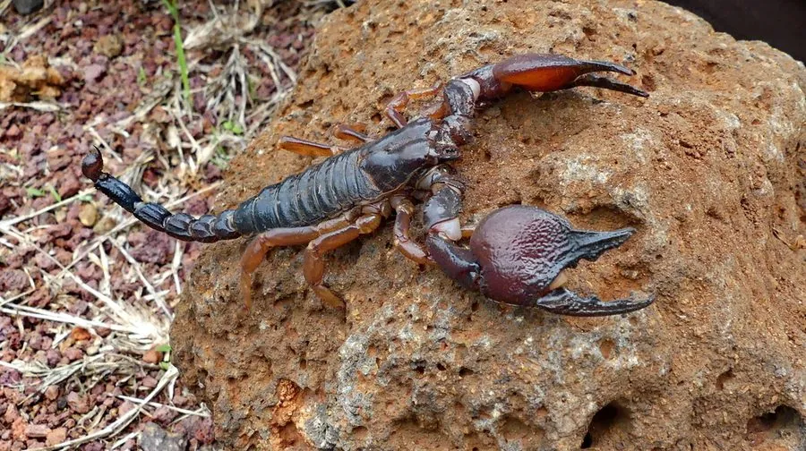

蛛形动物 · 动物界
坦桑尼亚红爪蝎 Pandinus cavimanus

东非热带草原的大型蝎类，双螯宽厚、步足与螯的末端呈红褐色，性情相对温和，是宠物蝎中常见种类，蜇伤一般较轻微。
- 分类
- 门节肢动物门纲蛛形纲目蝎目科蝎科属帝王蝎属
- 栖息环境
- 热带草原、稀树草原、沿海灌丛与石块、倒木下的浅洞
- 地理分布
- 坦桑尼亚、肯尼亚东部与莫桑比克北部的东非沿海地区
- 保护级别
- IUCN 未评估；受宠物贸易捕捉影响
物种志
坦桑尼亚红爪蝎体长 10–13 厘米，是体型较大的蝎类，双螯宽厚粗壮，表面有颗粒状突起。通体暗褐至黑色，步足末端、双螯的钳指与尾部末端呈红褐或橙红色，形成明显的“红爪”，因此得名。身体分头胸部与腹部，头胸甲背面有一对中眼与数对侧眼，腹部末端为五节尾与毒刺。
它们分布于坦桑尼亚、肯尼亚与莫桑比克的热带草原、稀树草原与沿海灌丛，栖息于石块下、倒木下或自挖的浅洞中，夜行性，捕食昆虫、蟋蟀、蟑螂与小型无脊椎动物。与许多剧毒蝎不同，它的双螯发达而尾部相对不粗，捕猎更多依靠夹击而非注毒，性情也较为温和，被蜇通常只引起局部疼痛与红肿。雌蝎卵胎生，幼蝎出生后爬上母背生活一段时间才独立。因宠物贸易需求，野外捕捉对其种群有一定压力。
形态与习性
- 体长约 10–13 cm
- 食性昆虫、蟋蟀、蟑螂与小型无脊椎动物
- 毒性较弱，蜇伤多引起局部疼痛与红肿
- 捕猎方式以宽厚双螯夹击为主，注毒为辅
- 繁殖卵胎生，幼蝎出生后爬上母背生活一段时间
- 活动节律夜行性，白天藏于石块、倒木下或浅洞中
- 寿命约 8–12 年
趣味知识
- 它的钳子和脚尖染着一层红褐色，像涂了指甲油，因此叫红爪蝎。
- 它靠一对大钳子制服猎物，尾刺更多是用来吓退敌人的。
- 幼蝎出生后会挤在母亲背上待上一阵，蜕皮后才下地独立。